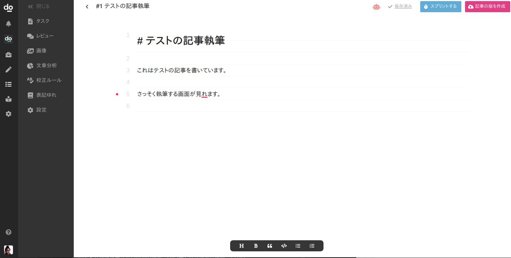
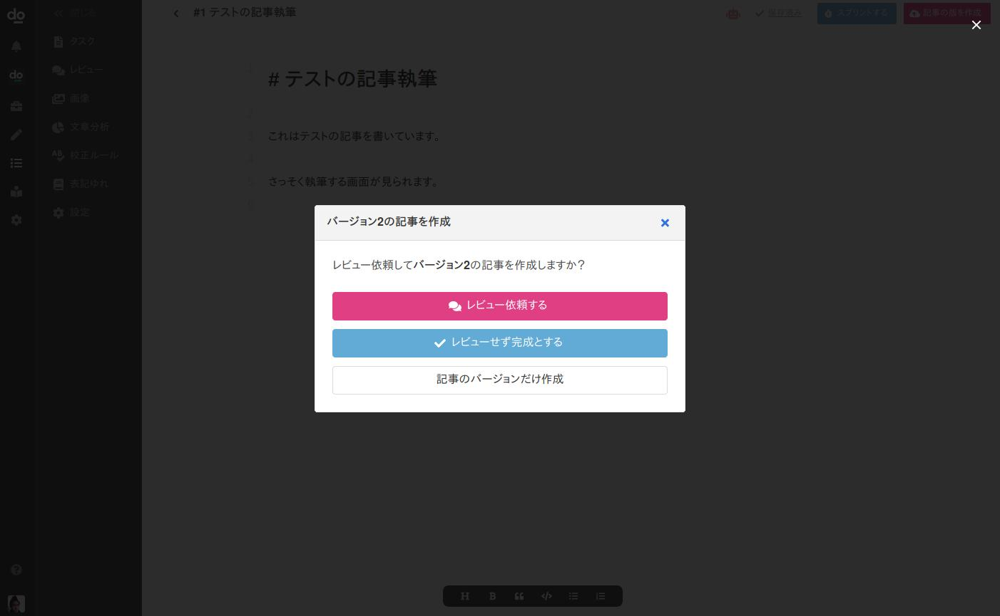
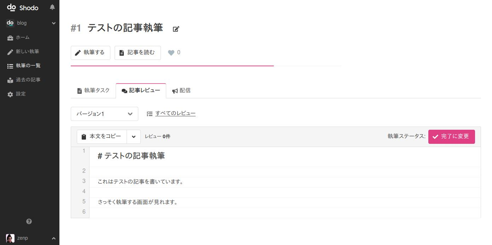
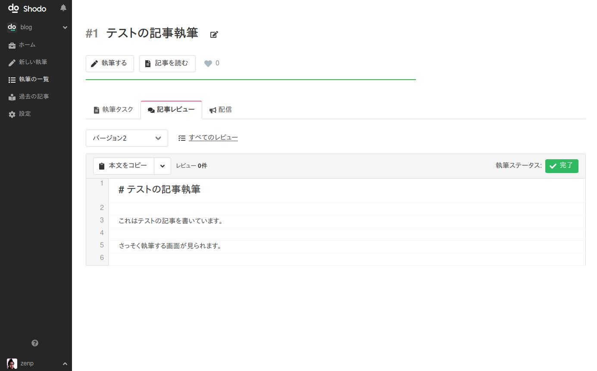

Shodoを使ってみよう！¶
Shodoにサインアップが終わると以下の画面が表示されます。
もし表示されない方は https://app.shodo.ink/ にアクセスしなおして、サイドバーから作成したプロジェクト（blog など）をクリックしてください。
記事を書いてみよう！¶
まず、何はともあれShodoで記事を書いてみましょう。
最初に 「新しく執筆する」をクリック してください。

次に 「すぐに執筆」をクリック してください。

以下のような画面が表示されますので、書きたい記事の内容を決めます。 最初は難しく考えず、「テストの記事執筆」などのタイトルを入力してください。 他はとくに入力しなくても問題ありませんので、「すぐ執筆する」をクリック してください。

すると、記事を執筆する画面に移動します。 執筆画面では、書きたい記事の内容を好きに書けます。 まずは試しに「テストの記事を書いています」などを書いてみましょう。他に色々操作してみても問題ありません。 好きに執筆を試してみてください。
一旦書き終われば画面右上の「記事の版を作成」をクリックしてください。

記事を作成しようとすると、レビュー依頼するか確認されます。 今回はレビューせずに記事を完成としましょう。
「レビューせず完成とする」をクリックしてください。

以下のように完成した記事を見られる画面が表示されます。
「本文をコピー」をクリックすると記事をコピーできます。

この執筆に関してやるべきことはすべて終わったので 「完了に変更」をクリック してください。 記事を執筆するステータスが「完了」になりますので、これで執筆はおしまいです。

Shodoではバージョン（版）を重ねて執筆したり、他の人にレビューをもらったりもできます。 ですがそれらは一旦あとにしておきましょう。
画面左のサイドバーにある「ホーム」をクリックしてプロジェクトのホームに戻りましょう。 また、初めの画面に戻ります。

一旦、記事を執筆することは試せました。 今度からは、画面左のサイドバーにある「新しい執筆」から記事を執筆できます。 初期設定の画面からは他にも、コラボレーションのために組織のメンバーを招待したり、チャット（Slack）への通知を設定したりできます。
これからはどうすれば？¶
このあとは執筆しようからより詳しくガイドを読んでも良いですし、Shodoのアプリを動かして色々と試して見るのも良いでしょう。 プロジェクトや執筆は好きに作成できますし、後から困ることはありませんので、気にせずにまずは使ってみてください。
もし分からないことがあればお問い合わせ画面からもご連絡いただけますので、お気軽にご相談ください！